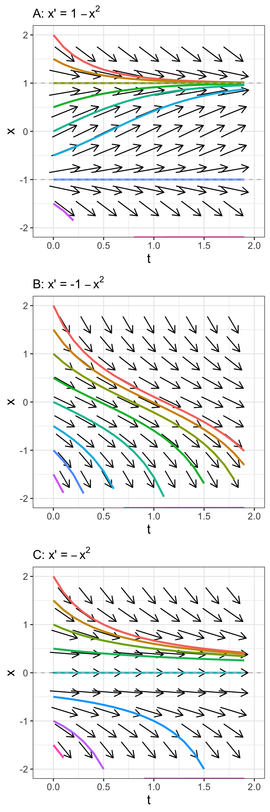
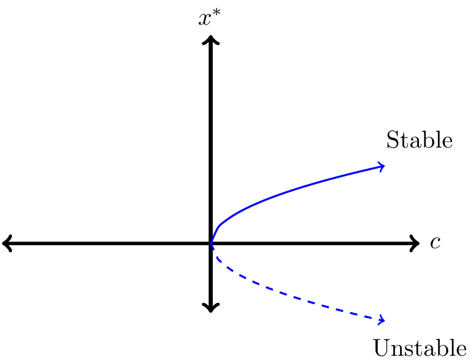
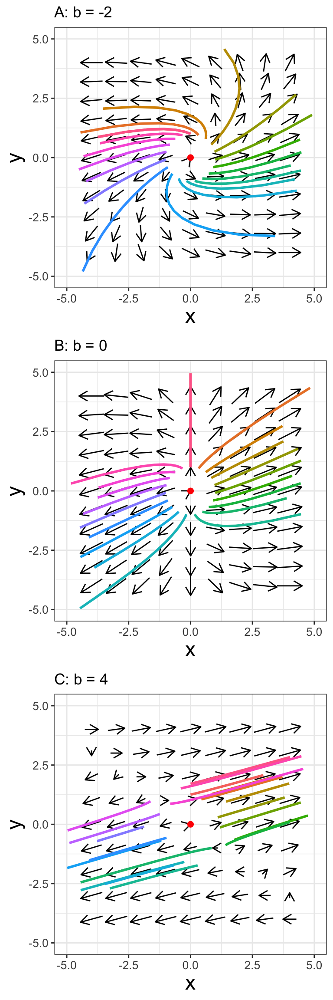
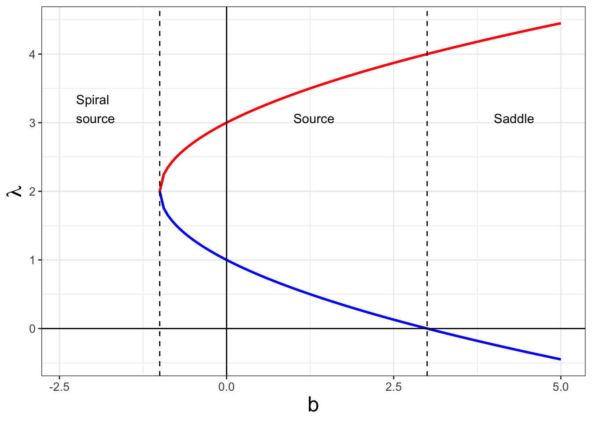
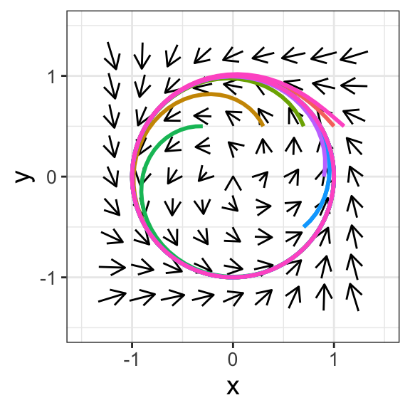

20 Bifurcation
In this chapter we will use bifurcation to examine how the stability of an equilibrium solution changes as the value of a parameter changes. This is a great topic of study that (by necessity) requires you to think of stability of an equilibrium solution on multiple levels. You are up for the challenge; let’s get started!
20.1 A series of equations
Consider the differential equation \(\displaystyle x' = 1-x^{2}\). This differential equation has an equilibrium solution at \(x=\pm 1\). To classify the stability of the equilibrium solutions we apply the following test for stability of an equilibrium solution that we developed in Chapter 5:
- If \(f'(y^{*})>0\) at an equilibrium solution, the equilibrium solution \(y=y^{*}\) will be unstable.
- If \(f'(y^{*}) <0\) at an equilibrium solution, the equilibrium solution \(y=y^{*}\) will be stable.
- If \(f'(y^{*}) = 0\), we cannot conclude anything about the stability of \(y=y^{*}\).
Applying this test, we know \(f(x)=1-x^2\) and \(f'(x)=-2x\). Since \(f'(1)=-2\) and \(f'(-1)=2\), then the respective equilibrium solution \(x=1\) is stable and the equilibrium solution at \(x=-1\) is unstable.
Let’s modify and extend this example further. Consider two more differential equations:
- \(\displaystyle x' = -1-x^{2}\): This differential equation does not have any equilibrium solutions, so we do not need to apply the stability test.
- \(\displaystyle x' = -x^{2}\): This differential equation has an equilibrium solution at \(x=0\); the stability test cannot apply because \(f'=-2x\) and \(f'(0)=0\). The general solution to this differential equation is \(\displaystyle x(t)=\frac{1}{t+C}\) (Exercise @ref(exr:dxdt-x2-20)), which apart from the vertical asymptote at \(t=-C\) is always decreasing for \(t>0\). So the equilibrium solution at \(x=0\) is not stable.
Figure 20.1 builds on an interesting pattern in our series of differential equations. Let’s build on these three examples in a more general context. Consider the differential equation \(\displaystyle x' = c-x^{2}\), which is a generalization of our examples. (For our examples \(c=1\) \(-1\), and \(0\) respectively.)
The value of \(c\) influences the phase line and the resulting solution. Steady states to \(\displaystyle x' = c-x^{2}\) are at \(x^{*}=\pm \sqrt{c}\). We can also test out the stability of our steady states using the stability test, with \(f(x)=c-x^{2}\) and \(f'(x)=-2x\).
If \(c>0\) we have two steady states, summarized in the following table:
| Equilibrium solution | \(f'(x^{*})\) | Tendency of solution |
|---|---|---|
| \(x^{*}=\sqrt{c}\) | \(-2 \sqrt{c}\) | Stable |
| \(x^{*}=-\sqrt{c}\) | \(2 \sqrt{c}\) | Unstable |
(You should verify that the stability result we initially found when \(c=1\) matches the table.)
If \(c=0\) there is only one steady state, summarized, in the following table:
| Equilibrium solution | \(f'(x^{*})\) | Tendency of solution |
|---|---|---|
| \(x^{*}=0\) | 0 | Inconclusive |
Even though in this case the stability test is inconclusive, based on the phase plane for \(x'=-x^{2}\) (Figure 20.1), the equilibrium solution \(x^{*}=0\) is unstable. If the initial condition \(x(0)\) is greater than 0, the solution flows towards \(x=0\), but if the initial condition is less than zero, the solution flows away from \(x=0\). This type of behavior is similar to a one-dimensional analogue to a saddle node from Chapter 18.
Finally, when \(c<0\) then there are no steady states because the \(\sqrt{c}\) will be an imaginary number.1
Notice how different values of \(c\) influence both the value \((x^{*}=\pm \sqrt{c})\) and the stability of the equilibrium solution (stable / unstable). Rather than making a series of tables, we can represent the dependence of the equilibrium solution and its stability in what is called a bifurcation diagram (Figure 20.2).

Let’s talk about Figure 20.2. The graph represents the value of the equilibrium solution (\(x^{*}\), vertical axis) as a function of the parameter \(c\) (horizontal axis). Since equilibrium solutions are characterized by \(x^{*}=\pm \sqrt{c}\) we have the “sideways parabola”, traced in blue in Figure 20.2. When \(c<0\), there is no equilibrium solution, (so nothing is plotted in the second and third quadrants of Figure 20.2). The difference between the solid and dashed lines in Figure 20.2 is used to distinguish between a stable equilibrium solution (\(x^{*}=\sqrt{c}\) when \(c>0\)) and an unstable equilibrium solution (\(x^{*}=-\sqrt{c}\) when \(c>0\)). It is so cool that all the information about the equilibrium solution and its stability is contained in Figure 20.2!
The bifurcation structure of \(\displaystyle x'=c-x^{2}\) is called a saddle-node bifurcation. To give another context, it might be helpful to think of this \(c\) like a tuning knob. As \(c>0\) we will always have two different equilibrium solutions that are symmetrical based on the value of \(c\). The positive equilibrium solution will be stable, the other unstable. As \(c\) approaches zero these equilibrium solutions will collapse into each other. If \(c\) is negative, the equilibrium solution disappears.

20.2 Bifurcations with systems of equations
We can also examine how bifurcation plays a role with systems of differential equations.
As another example, let’s determine the behavior of solutions near the origin for the system of equations: \[ \frac{\vec{dx}}{dt} = \begin{pmatrix} 3 & b \\ 1 & 1 \end{pmatrix} \vec{x}. \tag{20.1}\]
This equation has one free parameter \(b\) that we will analyze using the trace determinant conditions developed in Chapter 19. Let’s call the matrix \(A\), so the tr\((A)=4\) and \(\det(A)=3-b\). Since the trace is always positive either the equilibrium solution will be a saddle if \(\det(A)<0\), or when \(3<b\). We have a spiral source when \(\det(A)>0\) (this means \(3 > b\)) and \(\det(A) > (\mbox{tr}(A))^{2}/4\), or when \(3-b > 4\), which leads to \(b<-1\). Figures 20.3A-C displays the phase planes for different values of \(b\) along with sample solution curves.
To summarize, Equation 20.1 has the following dynamics depending on the value of \(b\):
- When \(b < -1\), the equilibrium solution will be a spiral source.
- When \(-1 < b < 3\), the equilibrium solution will be a source.
- When \(3<b\), the equilibrium solution will a saddle.
Another approach to analyzing Equation 20.1 is to compute the eigenvalues directly, which in this case are \(\displaystyle \lambda_{1,2}(b)=2 \pm \sqrt{b+1}\). Creating a plot of the eigenvalues (Figure 20.4) can also help explain the bifurcation structure. When \(b<-1\), the eigenvalues are imaginary, with Re\((\lambda_{1,2}(b)=2)=2\), so the equilibrium solution is a spiral source. When \(-1 < b < 3\), both eigenvalues are positive, so the equilibrium solution is a source. Finally, when \(3 < b\), one eigenvalue is positive and the other is negative, confirming our analyses with the trace-determinant plane.

The benefit of a bifurcation diagram is to provide a complete understanding of the dynamics of the system as a function of the parameters. In this chapter we examined one-parameter bifurcations (for example we looked the stability of the equilibrium solution as it depends on c or b), but bifurcations can also be extended further to two parameter bifurcation families, applying similar methods. In general the methods are similar to what we have done.
20.3 Functions as equilibrium solutions: limit cycles
In the previous examples the stability of an equilibrium solution changed depending on the value of a parameter. Typically equilibrium solutions are a single point in the phase plane. Another way we can represent an equilibrium solution is with a function. As an example, consider the following highly nonlinear system in Equation 20.2:
\[ \begin{split} \frac{dx}{dt} =-y-x(x^2+y^2-1) \\ \frac{dy}{dt}=x-y(x^2+y^2-1) \end{split} \tag{20.2}\]
The phase plane for Equation 20.2 is shown in Figure 20.5. You can verify that Equation 20.2 has an equilibrium solution at the point \(x=0\), \(y=0\). However Figure 20.5 suggests there might be other equilibrium solutions when various solution curves are plotted with the phase plane.

What is interesting in Figure 20.5 is that the solution tends towards a circle of radius 1 (or the equation \(x^{2}+y^{2}=1\)). This is an example of an equilibrium solution that is a curve rather than a specific point. We can describe the phase plane with a new variable \(X\) that represents the distance from the origin (a radius \(r\)) by transforming this system from \(x\) and \(y\) to a single new variable \(X\) (see Exercise 20.11).
\[ \frac{dX}{dt} = -X(X-1) \mbox{ where } X=r^{2} \tag{20.3}\]
How Equation 20.2 transforms to Equation 20.3 is by applying a polar coordinate transformation to this system. With stability analysis for Equation 20.3 we can show that the equilibrium solution \(X=0\) is unstable (meaning the origin \(x=0\) and \(y=0\) is an unstable equilibrium solution) and the circle of radius 1 is a stable equilibrium solution (which is the equation \(x^{2}+y^{2}=1\)). In this case we would say \(r=1\) is a stable limit cycle. You will study a similar system in Exercises 20.11.
Equation 20.3 is an example of next steps with studying the qualitative analysis of systems. We can extend out Equation 20.2 further to introduce a parameter \(\mu\) that, as \(\mu\) changes, undergoes a bifurcation as \(\mu\) increases. This is an example of a Hopf bifurcation.
20.4 Bifurcations as analysis tools
The most important part in studying bifurcations is analyzing examples. This chapter has several exercises where you will construct bifurcation diagrams for one- and two-dimensional systems of differential equations. As a reminder, constructing sample phase lines / phase planes before analyzing stability and the bifurcation structure is always helpful to build understanding.
Bifurcation analysis is a fascinating field of study that combines knowledge of differential equations, geometry, and other types of advanced mathematics. For further information, please see the texts by Strogatz (2015), Perko (2001), and Kuznetsov (2004).
20.5 Exercises
Exercise 20.1 Explain why \(\displaystyle x'= 1+x^{2}\) does not have any equilibrium solutions.
Exercise 20.2 Use separation of variables to verify that the general solution to \(\displaystyle x' = -x^{2}\) is \(\displaystyle x(t)=\frac{1}{t+C}\).
Exercise 20.3 Apply local linearization to classify stability of the following differential equations:
- \(\displaystyle \frac{dx}{dt} = x-x^{2}\)
- \(\displaystyle \frac{dx}{dt} = -x^{2}\)
- \(\displaystyle \frac{dx}{dt} = -x-x^{2}\)
Exercise 20.4 Consider the differential equation \(\displaystyle x' = cx-x^{2}\). What are equations that describe the dependence of the equilibrium solution on the value of \(c\)? Once you have that figured out, plot the bifurcation diagram, with the parameter \(c\) along the horizontal axis. This bifurcation is called a transcritical bifurcation.
Exercise 20.5 Consider the differential equation \(\displaystyle x' = cx-x^{3}\). What are equations that describe the dependence of the equilibrium solution on the value of \(c\)? Once you have that figured out plot the bifurcation diagram, with the parameter \(c\) along the horizontal axis. This bifurcation is called a pitchfork bifurcation.
Exercise 20.6 Construct a bifurcation diagram for the differential equation \(\displaystyle x'=c+x^{2}\)
Exercise 20.7 Consider the differential equation \(\displaystyle x' = x(x-1)(b-x)\). The differential equation has equilibrium solutions at \(x^{*}=0\), \(x^{*}=1\), and \(x^{*}=b\), where \(b > 0\).
- Use desmos or some other plotting software to investigate the effect of the number of roots as \(b\) increases from a value of 0.
- Analyze the stability of each of these equilibrium solutions. (You may want to multiply out the right hand side of the differential equation.) Whether a given equilibrium solution is stable may depend on the value of \(b\).
- Construct a bifurcation diagram for all three solutions together, with \(b\) on the horizontal axis and the value of \(x^{*}\) on the vertical axis.
Exercise 20.8 Consider the system of differential equations:
\[ \begin{pmatrix} x' \\ y' \end{pmatrix} = \begin{pmatrix} -x \\ cy - y^{2} \end{pmatrix} \]
- What are the equilibrium solutions for this (uncoupled) system of equations?
- Evaluate stability of the equilibrium solutions as a function of the parameter \(c\).
- Construct a few representative phase planes to verify your analysis.
Exercise 20.9 Consider the following linear system of differential equations:
\[ \frac{d}{dt}\vec{x} = \begin{pmatrix} 3 & b \\ b & 1 \end{pmatrix} \vec{x}. \]
- Verify that the characteristic polynomial is \(f(\lambda,b)=\lambda^{2}-4\lambda+(3-b^{2})\).
- Solve \(f(\lambda,b)=0\) with the quadratic formula to obtain an expression for the eigenvalues as a function of \(b\), that is \(\lambda_{1,2}(b)\).
- Using the eigenvalues, classify the stability of the equilibrium solution as \(b\) changes.
- Generate a few representative phase planes to verify your analysis.
- Create a plot similar to Figure 20.4 showing the bifurcation structure.
Exercise 20.10 Consider the linear system of differential equations:
\[ \begin{split} \frac{dx}{dt}&=cx-y \\ \frac{dy}{dt} &= -x+cy \end{split} \]
- Determine the characteristic polynomial (\(f(\lambda,c)\)) for this system of equations.
- Solve \(f(\lambda,c)=0\) with the quadratic formula to obtain an expression for the eigenvalues as a function of \(c\), that is \(\lambda_{1,2}(c)\).
- Using the eigenvalues, classify the stability of the equilibrium solution as \(c\) changes.
- Generate a few representative phase planes to verify your analysis.
- Create a plot similar to Figure 20.4 showing the bifurcation structure.
Exercise 20.11 Consider the following highly nonlinear system:
\[ \begin{split} \frac{dx}{dt} =-y-x(x^2+y^2-1) \\ \frac{dy}{dt}=x-y(x^2+y^2-1) \end{split} \]
We are going to transform the system by defining new variables \(x=r \cos \theta\) and \(y=r \sin \theta\). Observe that \(r^2=x^2+y^2\).
Consider the equation \(r^2=x^2+y^2\), where \(r\), \(x\), and \(y\) are all functions of time. Apply implicit differentiation to determine a differential equation for \(\displaystyle \frac{d(r^{2})}{dt}\), expressed in terms of \(x\), \(y\), \(\displaystyle \frac{dx}{dt}\) and \(\displaystyle \frac{dy}{dt}\).
Multiply the above equations \(\displaystyle \frac{dx}{dt}\) by \(2x\) and \(\displaystyle \frac{dy}{dt}\) by \(2y\) on both sides of the equation. Then add the two equations together. You should get an expression for \(\displaystyle \frac{d(r^{2})}{dt}\) in terms of \(x\) and \(y\).
Rewrite the equation for the right hand side of \(\displaystyle \frac{d(r^{2})}{dt}\) in terms of \(r^{2}\).
Use your equation that you found to verify that
\[ \frac{dX}{dt} = -2X(X-1), \mbox{ where } X=r^{2} \]
Verify that \(X=1\) is a stable node and \(X=0\) is unstable.
As discussed in this chapter, this system has a stable limit cycle. What quick and easy modification to our system could you do to the system to ensure that this is an unstable limit cycle? Justify your work.
Exercise 20.12 Construct a bifurcation diagram for \(\displaystyle \frac{dX}{dt} = - 2X(X-\mu)\),; \(\mu\) is a parameter. Explain how you can apply that result to understanding the bifurcation diagram of the system:
\[ \begin{split} \frac{dx}{dt} =-y- x(x^2+y^2-\mu) \\ \frac{dy}{dt}=x- y(x^2+y^2-\mu) \end{split} \]
This system is an example of a .
Exercise 20.13 (Inspired by Logan and Wolesensky (2009)) The immune response to HIV can be described with differential equations. In the early stages (before the body is swamped by the HIV virions) the dynamics of the virus can be described by the following system of equations, where \(v\) is the virus load and \(x\) the immune response:
\[ \begin{split} \frac{dv}{dt}&=rv - pxv \\ \frac{dx}{dt} &= cv-bx \end{split} \]
You may assume that all parameters are positive.
- Explain the various terms in this model and their biological meaning.
- Determine the equilibrium solutions.
- Evaluate the Jacobian for each of the equilibrium solutions.
- Construct a bifurcation diagram for each of the equilibrium solutions.
Kuznetsov, Yuri. 2004. Elements of Applied Bifurcation Theory. 3rd ed. Springer.
Logan, J. David, and William Wolesensky. 2009. Mathematical Methods in Biology. 1st ed. Hoboken, N.J: Wiley.
Perko, Lawrence. 2001. Differential Equations and Dynamical Systems. 3rd ed. New York, New York: Springer.
Strogatz, Steven H. 2015. Nonlinear Dynamics and Chaos: With Applications to Physics, Biology, Chemistry, and Engineering. 2nd ed. Boulder, CO: CRC Press.
While eigenvalues can be imaginary, equilibrium solutions for the contexts studied here can only be real.↩︎